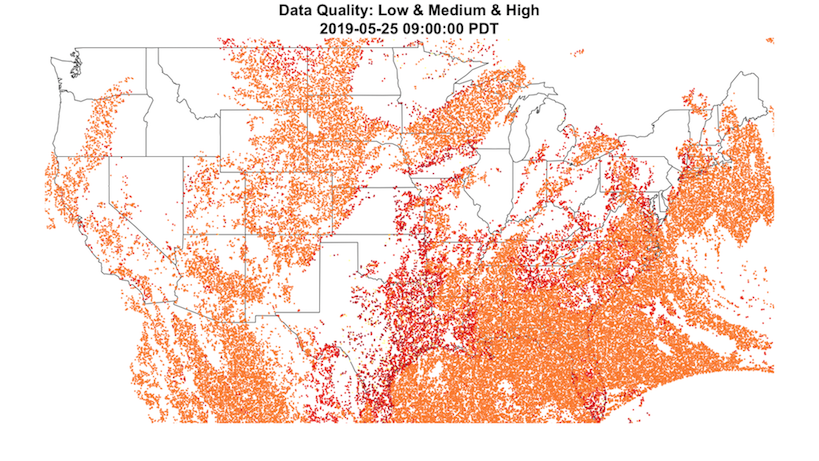
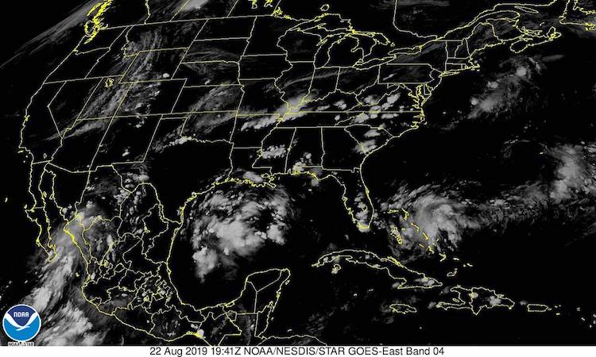

GOES-East Data Quality Spatial Limits
Mazama Science
8/22/2019
goes-east_data_quality_limits.RmdWestern Exclusion
Aerosol optical depth readings from the GOES-East satellite are each labeled with a data quality flag ranging from 0 to 2 (high to low) including an additional flag, 3, for “no retrieval flag”. Plotting data with no quality restrictions typically results in an image like the following:

While clouds and snow might leave many regions spotty or obscured, we can see that there is at least some coverage across the whole continental United States. However, when plotting only medium and/or high quality data we notice something interesting:
As we should expect, quite a lot points have been removed–leaving many regions much more bare than before. However, while eastern states still retain some dense clouds of points, all readings from the west coast have been entirely swept away. There isn’t a single point left in Washington, Oregon, and Idaho, and large portions of Montana, Nevada, and California have been completely removed.
From the image above one can make out the apparent “shape” of this retained data. A well defined arc from North Dakota to California seems to be the border of a circular area between low quality data and the rest. Everything within this region is kept while the rest is thrown away. Unfortunately, while the central and eastern United States falls within this radius, much of the west coast does not. Similar plots at different times confirm that this boundary is fixed both in location and size.
So what is this boundary and why does it exist?
Satellite Angle Limitations
Due to GOES-East’s geostationary orbit over the equator at 75.0W, the satellite’s ABI scanner is limited to only covering the area shown below:

The satellite has a clear view of the regions directly below it, but due to the curvature of the Earth, the further the scanner looks out the more distorted its view becomes. Southeastern states like Florida can be scanned at an angle closer to 90 degrees, but those on the opposite coast like Washington, Oregon, and California can only be seen at a very shallow angle.
Part of what separates low quality readings from the rest is the local zenith angle (LZA) of the observation points. The GOES-R documentation defines this measurement on page 36:
- Local zenith angle: The angle between the line of sight to the satellite and the zenith at the observation target. (“Viewing zenith angle” in the diagram)

The documentation states that: “There are many ABI Level 2+ products where the local zenith angle has an adverse effect on the quality of product data or precludes its generation”. For the aerosol optical depth product, readings at locations with a LZA of less than 60.0 degrees are labeled as “good” (p. 246).
As locations get further and further away from the satellite, their local zenith angle grows larger and larger. It is possible that the circular limit we found earlier is defined by this 60 degree angle constraint. Readings at the edge of that curve might have a LZA just barely under 60, while those in west coast states have LZAs too large to be labelled as high or medium quality.